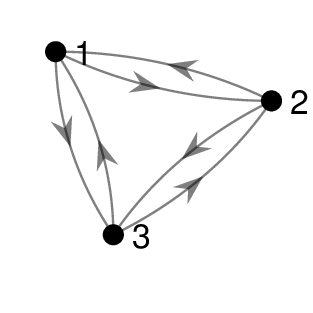

1. Graphs¶
A graph is a collection of nodes (or vertices) connected by edges. In the following example, which represents part of the egg-laying circuit of C-Elegans, nodes represent neurons and edges represent synaptic connections between them:
Definitions
- Graph
A graph \(G = (V, E)\) is a set of nodes \(V = \{v_1, v_2, \dots, v_n\}\) and edges \(E = \{(v_i, v_j), \dots\}\) where \((v_i, v_j)\) is an edge joining nodes \(v_i\) and \(v_j\).
- Order
The order of a graph \(G\) is number of nodes in \(G\).
- Directed Graph
A directed graph (or digraph) is a graph where each edge \((v_i, v_j)\) has an associated direction from \(v_i\) to \(v_j\).
- Simple Graph
A simple graph is a graph which does not have any loops (edges from a node to itself) or multiple edges (two edges joining the same two nodes in the same direction).
- Multigraph
A multigraph is a graph which is not a simple graph.
In this course we will mostly be considering simple directed graphs, since these are the most useful for representing neural circuits.

Fig. 1.1 Simple, directed and multigraphs.¶
1.1. Graph Representations¶
Given a graph, we would like to be able to answer various questions: Do two graphs have the same structure? Is there a path from node X to node Y? What is the minimum length path from node X to node Y? To answer these questions, we need a way to represent the graph in a computer. There are three main ways to represent a graph: edge list, adjacency list and adjacency matrix.
Definitions
- Edge List
An edge list consists of a list of pairs of numbers, one pair for each edge. The numbers represent the starting and ending nodes of each edge. Here is the edge list corresponding to the egg-laying graph:
For a directed graph, the order that we write the pair \([i, j]\) is important, but the order that we write the list of pairs is not.
- Adjacency List
An adjacency list consists of a sequence of lists. The list at position \(i\) contains all the nodes which node \(i\) connects to. Here is the adjacency list corresponding to the egg-laying graph:
- Adjacency Matrix
An adjacency list consists of a sequence of lists. The list at position \(i\) contains all the nodes which node \(i\) connects to. Here is the adjacency list corresponding to the egg-laying graph:
1.1.1. Question 1¶
For the following directed graph, write out its:
Edge list.
Adjacency list.
Adjacency matrix.

1.1.2. Question 2¶
Draw a picture of the directed graph defined by:
Edge list \( [1, 2], [5, 4], [5, 5], [5, 3], [3, 1], [1, 3], [3, 4], [4, 1]\)
Adjacency list \([2, 3], [], [1, 4], [1], [5, 4, 3]\)
Adjacency matrix:
Two of the three graphs are the same. Which two?
1.2. Walks and Paths¶
A walk in a graph is a sequence of nodes formed by following edges. A walk may visit the same node several times. For example, in the egg-laying graph \([1, 3, 7, 6]\) is a walk from node 1 to node 6, and \([1,2,1,3]\) is a walk from node 1 to node 3.
A path is a walk which does not visit any node more than once. So \([1, 3, 7, 6]\) is a path but \([1, 2, 1, 3]\) is not.
The length of a walk (or path) is the number of edges (which is one less than the number of nodes).
1.2.1. Question 3¶
The complete directed graph \(K_n\) is a directed graph with \(n\) nodes and an edge connecting every node to every other node (but no node is connected to itself). Sketch \(K_3\). In \(K_3\), how many distinct length 10 walks are there?
In the egg-laying circuit, identify all paths from node 6 to node 4, and all paths from node 4 to node 6.
Find the longest path in the egg-laying circuit.
1.3. Shortest Paths¶
Given two nodes in a directed graph, there may be zero, one or multiple paths between them. The path distance from node \(v_i\) to node \(v_j\) is the length of the shortest path connecting \(v_i\) to \(v_j\). In this section we will build an algorithm which calculates the path distance between nodes, using a technique called breadth first search.
1.3.1. Question 4¶
Determine the path distance between node 1 and every other vertex in the egg-laying circuit by completing the following steps:
Label node 1 with a distance of 0.
Label every node directly connected by an edge from node 1 with a distance 1.
Label every unlabelled node directly connected by an edge from a distance-1 node with a distance of 2.
Continue until the whole graph is labelled.

1.4. Graph Properties¶
In this section we will study some properties properties of directed graphs which we can use to compare brain circuits. For a more detailed explanation of these definitions, see [1].
The degree of a node is defined as the edges which connect to the node.
For a directed graph, the indegree and outdegree of a node is defined as the number of incoming and outgoing connections respectively.
By calculating the histogram of node degrees, we arrive at the degree distribution of the graph (see Fig. 1.2).
{kind=link}
Fig. 1.2 Directed graph and a histogram of its outdegree distribution. Its average connection density is \(12/(6^2−6) = 0.4\). The cluster index of node 1 is \(\gamma(1) = 6/(5^2−5) = 0.4\) since it has 5 neighbours connected by 6 edges.¶
The distance matrix of a graph is the matrix [\(d_{ij}\)] where \(d_{ij}\) is the path distance from node \(i\) to node \(j\). If \(i=j\) then \(d_{ij} =0\), and if \(i\) and \(j\) are not connected then \(d_{ij}\) is infinite. The average path length is the mean of the finite off-diagonal elements of the distance matrix.
For an undirected graph, the distance matrix is symmetrical.
The clustering coefficient of a node \(\gamma(\mu)\) measures how many edges exist between a node’s neighbours, where the \(n\) neighbours of a node \(\mu\) are the nodes directly connected to \(\mu\) in either direction. The nodes’s clustering coefficient is defined as the ratio of actually existing connections between the \(n\) neighbours and the maximal number of such connections possible.
For a directed graph, if the \(n\) neighbours are connected to each other by \(m\) directed edges, then the clustering coefficient is:
For an undirected graph, if the \(n\) neighbours are connected to each other by \(m\) edges, then the clustering coefficient is:
Note that the clustering coefficient does not exist for nodes that have fewer than 2 neighbours.
The global clustering coefficient is the average clustering coefficient over all nodes (where it is defined).
{kind=link}
Fig. 1.3 Calculating a node’s clustering coefficient in a directed graph. Node 1 has \(n=3\) neighbours, nodes 2, 3 and 4. The subgraph consisting of nodes 2, 3 and 4 has \(m=3\) edges, out of a possible \(n^2 - n = 6\) edges (dashed). Therefore the clustering coefficient of node 1 is \(\gamma(\mu) = m/(n^2 −n) = 3/6 = 0.5.\)¶
1.4.1. Question 5¶
Recall that \(K_n\) is the complete directed graph with \(n\) nodes. Determine the average path length and global clustering coefficient of \(K_n\).
What does the global clustering coefficient indicate about a graph? (See [1])
1.5. Breadth First Search¶
Question 4 should have given you an intuition about how to build an algorithm which calculates the shortest path between the starting node and every other node. In the next section we explore this technique.
A search algorithm is a method of traversing a graph by following edges. In breadth first search (BFS), we start at the origin node and traverse the graph in levels, increasing the distance from the origin one level at a time.
{kind=link}
Example
Compute a breadth first search of the undirected graph above, starting from node 1.
At the first level, we visit the direct neighbours of node 1, which are nodes 3 and 7. In the second level, we visit nodes 4, 5 and 6 which are the direct neighbours of nodes 3 and 7. Finally, we visit node 2 which is the direct neighbour of nodes 4, 5 and 6. The output of the breadth first search is \([1, 3, 7, 4, 5, 6, 2]\).
Note that within each level, the nodes may be visited in any order.
1.5.1. Question 6¶
Compute a breadth first search of the egg-laying graph, starting from node 2, and use this to determine the path distance of each node from node 2.
Do the same starting from node 6.
1.6. Subgraphs¶
Given a graph \(G\), a subgraph is a subset of nodes of \(G\) along with their corresponding edges.
{kind=link}
Fig. 1.4 The graph on the right is a subgraph of the graph on the left consisting of the nodes [3, 4, 7].¶
1.6.1. Question 7¶
For the subgraph of the egg-laying circuit consisting of nodes \([1, 2, 3, 6]\):
Draw its graph
Write down its adjacency matrix
1.7. Connectedness¶
An undirected graph is connected if there is a path between every node and every other node.
If a graph is not connected, then we can split it into connected components by declaring that two vertices are in the same component if and only if there is a path between them.
1.7.1. Question 8¶
Use breadth first search to determine all connected components of the undirected graph given by the edge list \([1, 7], [2, 3], [6, 9], [5, 7], [8, 4], [10, 2], [5, 6], [5, 1]\).
Draw the graph.
Choose any node as the starting point of BFS. All nodes visited by the BFS belong to a single component.
Choose any unvisited node as the starting point of a new BFS.
Continue until all nodes have been allocated to a component.
A directed graph is strongly connected if there is a path between every node and every other node (in both directions).
A directed graph is weakly connected if it is not strongly connected but its underlying undirected graph is connected, where the underlying undirected graph of a digraph is the undirected graph formed by replacing directed edges by undirected edges.
Two nodes are in the same strongly connected component of a directed graph if and only if there is a path between them in both directions.
{kind=link}
Fig. 1.5 The strongly connected components of the egg-laying circuit are \([1, 2], [3, 6, 7], [4]\) and \([5]\).¶
1.7.2. Question 9¶
Determine the strongly connected components of the digraph below.
Choose any node \(v_0\) as the starting point of a breadth first search to determine all nodes reachable from \(v_0\).
For each reachable node, use BFS to determine if there is a path back to \(v_0\). All such nodes are in the same strongly connected component.
Repeat from step 1, starting from any vertex not yet assigned to a strongly connected component.

Info
The algorithm described in the previous question is very inefficient. In practice, more efficient algorithms based on depth first search are used.
1.7.3. Question 10¶
Consider the graph given by adjacency list \([5], [1, 3], [2, 4, 6], [2], [1], [4]\).
Without drawing the graph, use BFS to determine all shortest paths starting from node 3.
Draw the graph and determine its strongly and weakly connected components.
1.8. Answers¶
Question 1
\([1,6],[6,1],[3,1],[3,4],[6,4],[4,4],[3,2],[4,2],[4,5],[2,5]\) (in any order)
\([6],[5],[1,4,2],[4,2,5],[],[1,4]\)
Question 2
1) and 2)
{kind=link}
3)

Question 3
1. There are 3 choices for the first node, and 2 choices for each of the 10 subsequent nodes. The total number of walks is therefore \(3 × 2^{10}\).
{kind=link}
2. Paths from node 6 to node 4: \([6,4],[6,7,4],[6,7,3,4],[6,7,3,5,4]\). Paths from node 4 to node 6: none.
3. \([2,1,3,7,6,4]\).
Question 5
Average path length = 1 since every node is directly connected to every other node in both directions. Global clustering coefficient = 1 since the neighbours of every node are all connected to each other in both directions.
The global clustering coefficient expresses how nodes share common neigh- bours that connect to one another. A high clustering coefficient represents a network with small groups of nodes that share local connections.
Question 6
BFS starting at node 2:\([2,1,4,3,5,7,6]\)
Path distances from node 2: \(d = [1,0,2,1,3,4,3]\) where \(d(i)\) is the distance from node \(i\).BFS starting at node 6: \([6, 4, 7, 3, 5]\)
Path distances from node 6: \(d = [inf, inf, 2, 1, 3, 0, 1]\)
Question 7
1.

2. For node order 1, 2, 3, 6:
Question 8
Connected components: \([1, 5, 6, 7, 9], [4, 8], [2, 3, 10]\)
Question 9
Strongly connected components: \([3, 6, 8], [2, 4], [1, 5, 7, 9]\)
1.9. References¶
[1] Sporns, Olaf. Graph theory methods for the analysis of neural connectivity patterns. In Neuroscience Databases. Springer, Boston, MA, 2003. pp 171-185.
[2] Fornito, A., Zalesky, A., and Bullmore, E. Fundamentals of Brain Network Analysis. Academic Press, 2016.